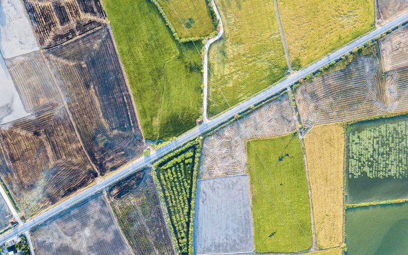
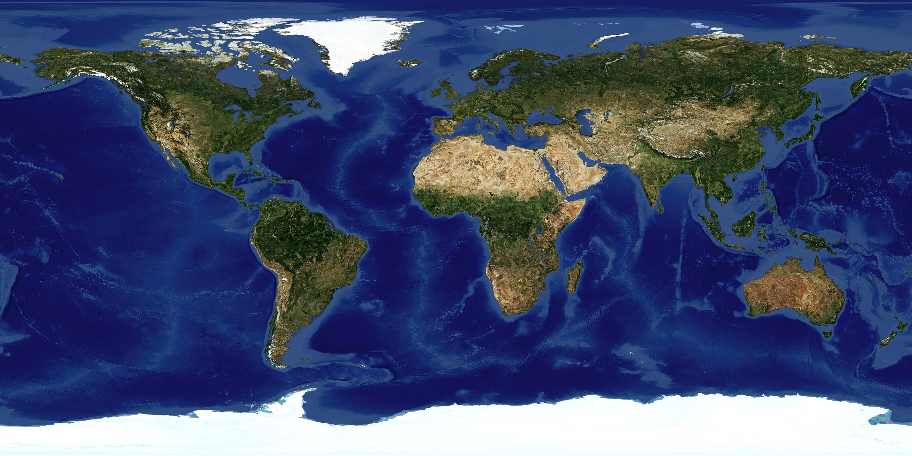
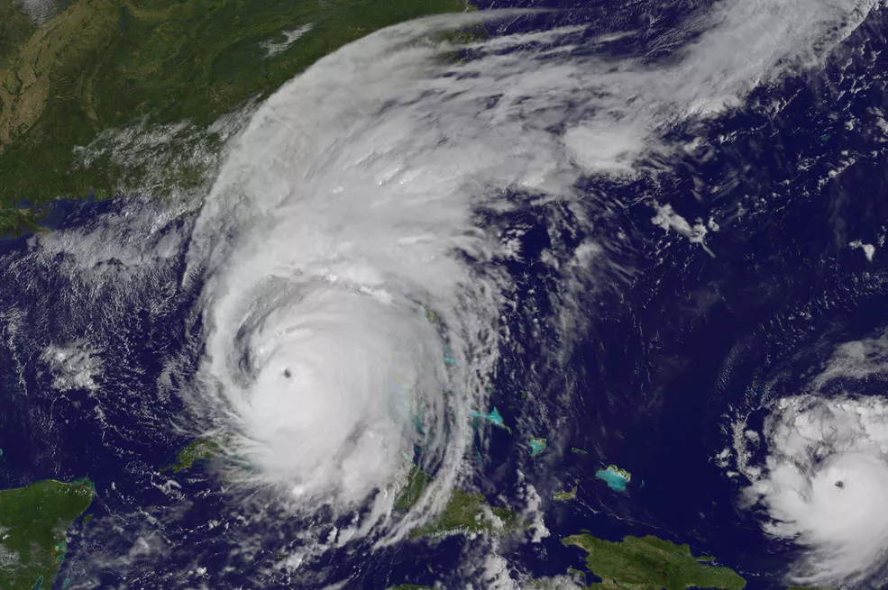

Novidades
Os satélites são essenciais para observar a Terra e o espaço. Eles ajudam a NASA a estudar o clima, acompanhar mudanças no planeta e coletar informações importantes para a ciência.
Saiba mais
As tecnologias espaciais também ajudam na agricultura. Imagens de satélites permitem acompanhar plantações, analisar o solo e identificar mudanças que podem ajudar no uso mais eficiente dos recursos naturais.
Saiba mais
A observação da Terra permite estudar seus oceanos, continentes e diferentes ambientes. Esses dados ajudam cientistas a compreender melhor as mudanças que acontecem em nosso planeta.
Saiba mais
Os satélites acompanham a formação e o deslocamento dos furacões. Essas informações são importantes para estudar os fenômenos climáticos e ajudar na previsão de possíveis impactos em diferentes regiões.
Saiba mais